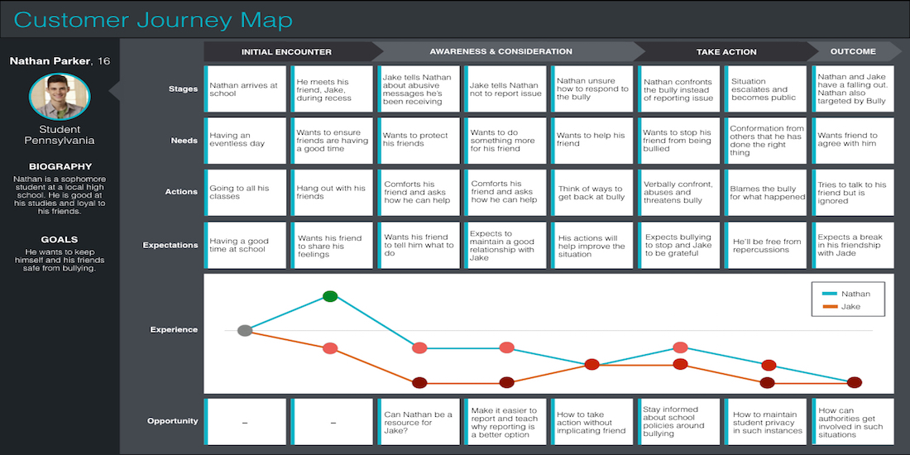
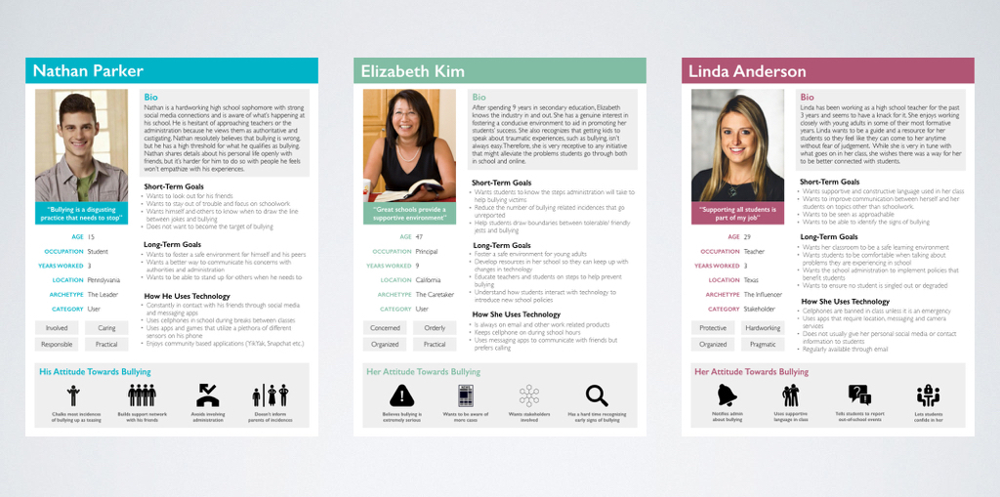
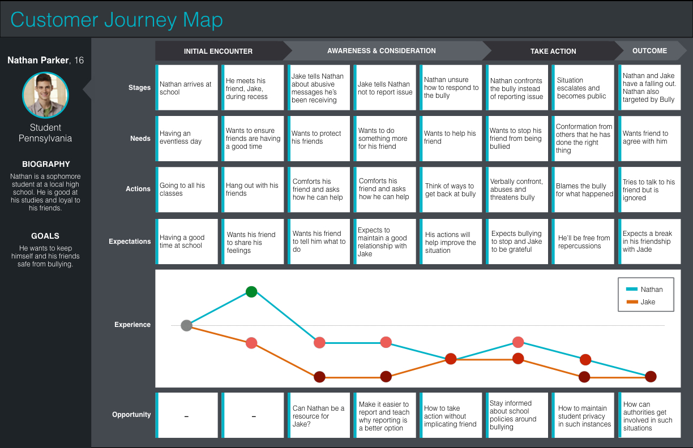

1 / 3

Customer Journey Map
2 / 3

User personas to help with ideation
3 / 3
Sample from presentation
Uplift
A high fidelity application prototype designed to address problem of bullying in schools
I was part of a team that was working to create a mobile application based solution for the problem- space of high-school bullying. We did a deep-dive contextual inquiry into the high school experience from several stakeholders and our proposed solution was called Uplift.

